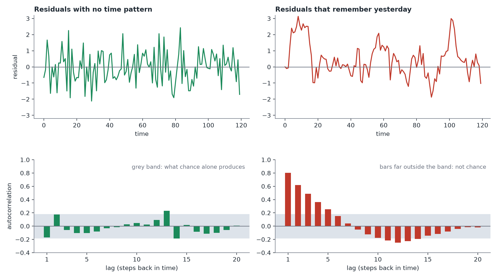

Time Series Data
In plain terms: when your observations are ordered in time, today's value is often correlated with yesterday's — and that correlation, if ignored, can make a model's conclusions look more confident than they should be.
Why time order can matter
If Mia measures a patient's LDL cholesterol every few weeks for a year, today's value is probably similar to the previous one — diet, medication doses and lifestyle changes carry over and don't reset randomly between visits. This kind of dependence is called autocorrelation. A model that treats each measurement as an independent, interchangeable data point (as ordinary regression does) assumes each one contributes independent information — an assumption autocorrelation violates.
It is often small enough to ignore
Not every dataset with a date column needs special time-series treatment. If you check and find that whatever correlation exists from one time point to the next is small or not statistically detectable, treating the data as if each point were independent is a perfectly reasonable approximation — there's no need to reach for a more complex model just because a date column exists. The right first step is always to check, not to assume either way.
How to check
Fit your usual model, then look at its leftover errors (residuals) for a pattern over time — a plot of "residual at time t vs. residual at time t-1" or an autocorrelation plot, alongside a formal check (the Ljung-Box test) for whether any leftover correlation is more than you'd expect from noise.

If autocorrelation is present: two different fixes depending on your goal
- If you only care about getting the uncertainty (standard errors/confidence intervals) right, and the point estimate itself is fine: use "HAC" or "Newey-West" standard errors — a correction that widens your confidence intervals appropriately without changing the model itself.
- If the time-dependence itself is part of what you're studying (e.g. you want to forecast future values, or there's a strong seasonal pattern you need to model): move to an actual time-series model, like including yesterday's value as a predictor, or a dedicated model such as ARIMA, which is built specifically to describe how a series depends on its own past.
The takeaway
Don't reflexively reach for a specialized time-series model the moment you see a date column. Check for autocorrelation first, and if it's negligible, say so and move on with the simpler model.